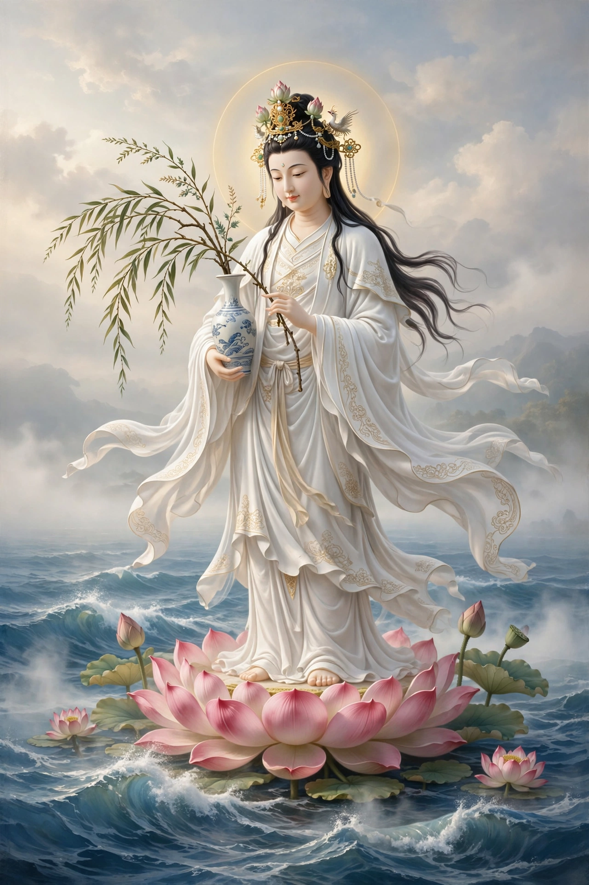

From Wikipedia, the free encyclopedia
| Guanyin | |
|---|---|
| Affiliation | Mahayana Buddhism; bodhisattva of compassion |
| Sanskrit origin | Avalokiteśvara |
| Other forms | Kannon (Japan), Quan Âm (Vietnam), Gwanseum (Korea) |
| Symbols | Vase of pure water, willow branch, thousand arms and eyes |
| Sacred site | Mount Putuo, China |

Guanyin (Chinese: 觀音, "Perceiver of the Sounds [of the World]") is the East Asian form of Avalokiteśvara, the bodhisattva of compassion in Mahayana Buddhism, and one of the most beloved figures of Chinese, Japanese, Korean and Vietnamese religion. In India Avalokiteśvara was male; in China, over the centuries of the Tang and Song dynasties, the bodhisattva's image gradually became female — the white-robed goddess of mercy who hears the cries of all who suffer and answers — a transformation that made Guanyin the universal refuge of women, sailors, travellers and the desperate, worshipped in Buddhist temples and household shrines alike.
The Lotus Sutra's chapter on Guanyin promises that she takes whatever form can save a being — monk, nun, layperson, child, god — and East Asian art multiplied her forms: the thousand-armed, thousand-eyed Guanyin who can reach everywhere at once; the water-moon Guanyin at contemplative rest; Guanyin of the Southern Sea, enthroned on Mount Putuo, her island sanctuary. The legend of Miaoshan tells of a princess who refused marriage, endured her father's persecution, and was revealed — after healing the father who had her executed, by offering her own arms and eyes as medicine — as Guanyin incarnate; the tale anchored her Chinese identity as a goddess of filial piety and boundless compassion.
Guanyin's three festivals (her birthday, enlightenment and renunciation, on the 19th days of the 2nd, 6th and 9th lunar months) draw crowds across East Asia; her name is invoked in danger ("Namo Guanshiyin Pusa" — homage to Guanyin Bodhisattva) by people of every station, and her statues — most famously the great bronze at Mount Putuo and countless temple images — make compassion visible. In Japan as Kannon she stands at the heart of pilgrimage circuits such as the Saigoku 33 temples.
Buddhism · Mahayana · Buddha · Zen · Chinese philosophy